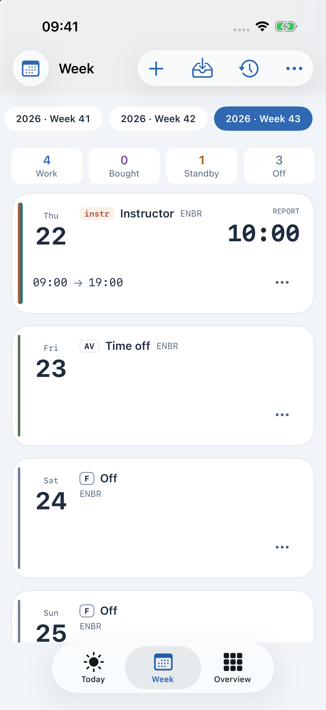
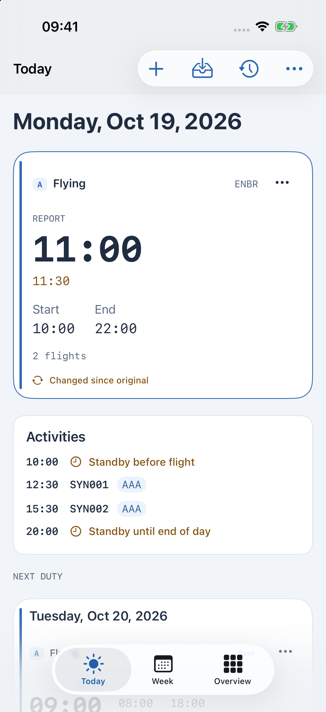
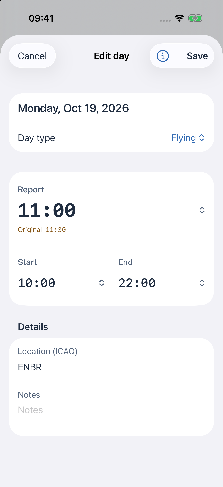

Nåværende betaversjon · iPhone, iPad og Apple Watch
CrewSchedule
Vaktplanen din.
Tydelig.
Vakttidene dine, dag for dag. Se hva som kommer, og hva som er endret.
Skjermbildene viser en fiktiv eksempelvaktplan. Skjermbildene viser det engelske grensesnittet.


Vaktplanen, med historikken sin
Se hva
som har endret seg.
Rapporttiden ble flyttet fra 11:30 til 11:00. Den opprinnelige tiden vises fortsatt ved siden av den nye.
Konfigurer automatisk import
iPhone. iPad. Apple Watch.
Vaktplanen din,
der du trenger den.
Behold det personlig. Importer og bruk vaktplanen på denne enheten. iCloud-synkronisering er valgfritt.
Velg kalender. Koble til kalendere hvis du vil at endringer i vaktplanen skal vises der.
Ta den med til Watch. En parkoblet Apple Watch kan ha sin egen kopi av vaktplanen og vise neste vakt.
En vaktplanassistent for planlegging. Følg arbeidsgiverens gjeldende operative instrukser.
CrewSchedule · Nåværende betaversjon
Bedre oversikt
over vaktplanen din.
Spør om å bli med i betaversjonen eller send et spørsmål om appen.
Spør om betaversjonen